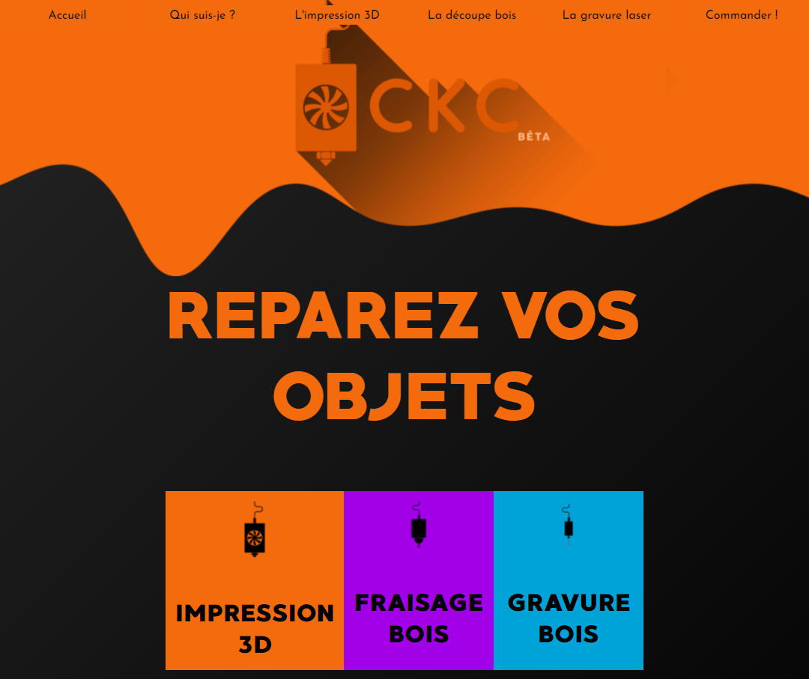
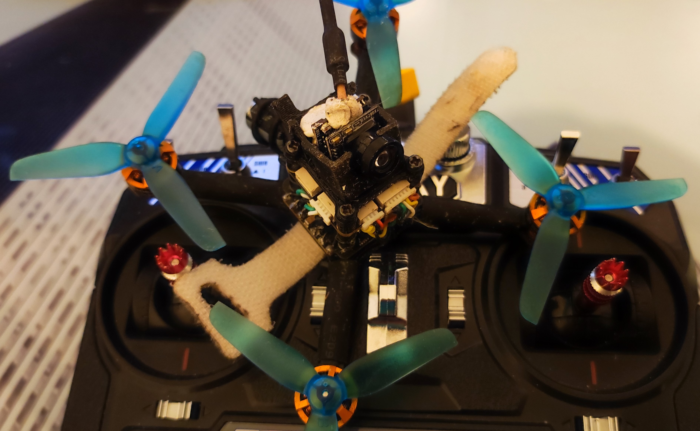
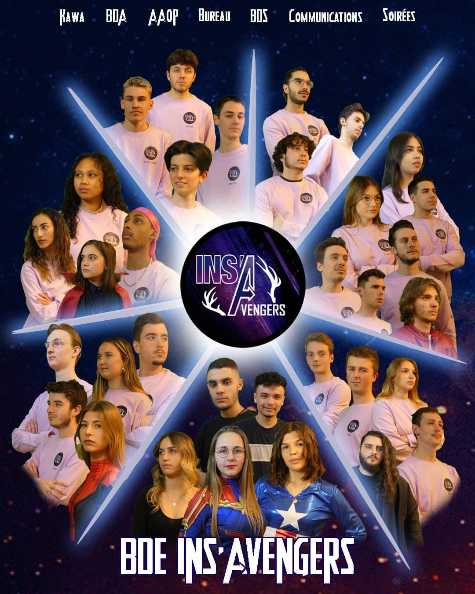
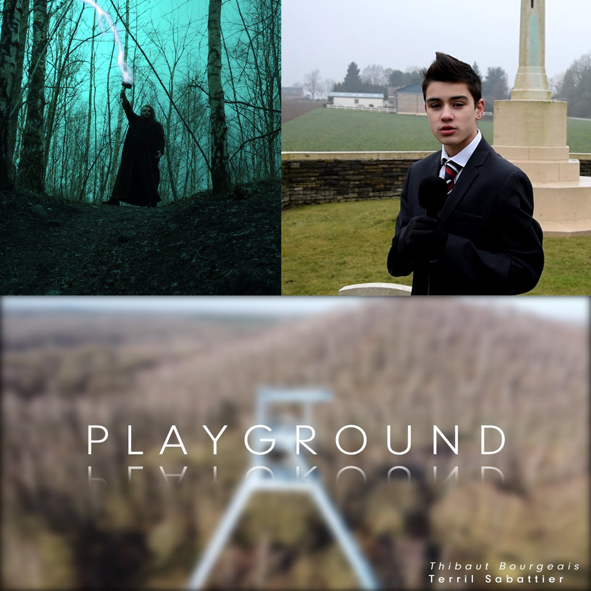
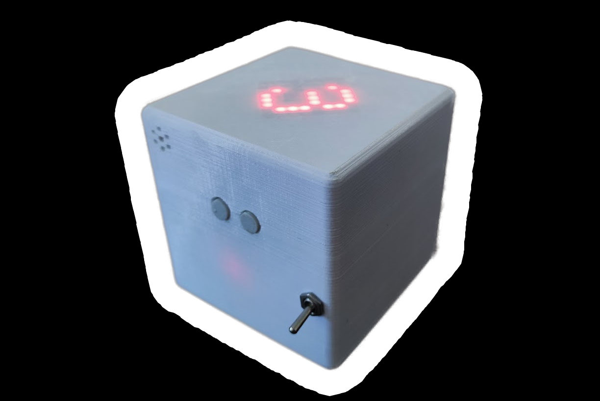
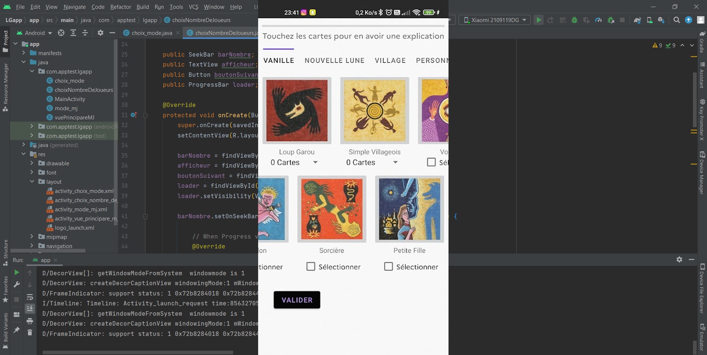

À propos de moi Futur diplômé, j'ai beaucoup de projets extrascolaires à mon actif
Penser Concevoir Fabriquer

Le site CKC
Un site internet, conçu pour vendre les produits de la marque CKC. Dont le concept est d'apporter l'impression 3D aux personnes n'ayant pas de compétences ou pas de machines
J'ai assemblé, soudé puis programmé mon drone de course en kit. Il faut ensuite le réparer et le tenir à jour quand il y a crash
Compétences utilisées :
Soudure 🔘
Minutie 🔘
Maintenance 🔘
Précision 🔘


La liste au Bureau des Etudiants
Avec 35 autres étudiants, nous avons monté la liste "INS'Avengers" où je suis vice-président de la communication et pour laquelle nous avons dû trouver des financements afin de réaliser un film et faire une semaine entière remplie d'activités. Nous avons été élu. Pour réussir nous avons appris beaucoup sur le travail d'équipe, la gestion de compétences et le volontariat. J'ai été en charge de la communication sur les réseaux (ainsi que de divers assets que nous avons pu publier sur ceux-ci), la prise de vues et du montage du film et du site.
Compétences utilisées :
🔘 Communication
🔘 Volonté de réussir
🔘 Assiduité
🔘 Compétitivité
🔘 Réseaux sociaux
🔘 Montage video, photo, prises de vue
Un jeu électronique en bois
J'ai créé un jeu à boire électronique dont le boîtier est fait en MDF 3mm découpé au laser. À l'intérieur une carte arduino UNO se charge d'animer les jeux. Les verres sont illuminés en fonction du jeu et un écran LCD i2c gère l'affichage des consignes.
Compétences utilisées :
Programmation arduino 🔘
Laser 🔘
Solidworks 🔘
Câblage 🔘

Des films
J'ai pu dans le cadre personnel, scolaire ou associatif, réaliser des courts-métrages (docmuentaires ou de fiction).
J'ai pu faire un dé électronique. Assez simple, il fait appel à un inclinomètre et une matrice led. Il m'a permis d'appréhender les pcb puisqu'il est basé sur une carte perforée d'oeillets de cuivre sur laquelle on fait le routage avec de l'étain.
Compétences utilisées :
Soudure 🔘
Arduino 🔘
Impression 3D 🔘

Musicien
Depuis mes 7ans je joue de la batterie. J'ai ainsi pu participer à beaucoup de projets musicaux en orchestre, en band ou avec les différents groupes pour lesquels j'ai pu jouer.
Compétences utilisées :
🔘 Travail d'équipe
🔘 Passion
🔘 Patience
Une application pour le jeu Loup-Garou
J'ai commencé à développer cette application (elle est en cours mais je manque de temps). Cependant l'un des trois modes que j'avais imaginé fonctionne bel et bien le plan des deux autres et terminé. Cette application permettrait à termes de remplacer le jeu de cartes en synchronisant les téléphones des joueurs en wifi. Pour l'instant elle ne remplace que le maitre du jeu. En ce qui concerne l'expérience utilisateur, elle dispose d'un mode jour et nuit et s'adapte à la taille de l'écran des utilisateurs
Compétences utilisées :
Java 🔘
UML 🔘
Auto-apprentissage 🔘

Compétences Ces divers projets m'ont permis d'acquérir un grand nombre de compétences rassemblées dans la carte ci-dessous. ⓘ Déplacez votre souris sur les éléments de l'arbre